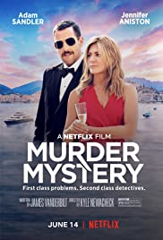
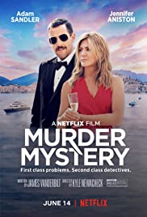
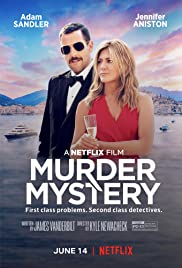

MY TOP 5 FAVORITE MOVIES

| |
After half of all life is snapped away by Thanos, the Avengers are left scattered and divided. Now with a way to reverse the damage, the Avengers and their allies must assemble once more and learn to put differences aside in order to work together and set things right. Along the way, the Avengers realize that sacrifices must be made as they prepare for the ultimate final showdown with Thanos, which will result in the heroes fighting the biggest battle they have ever faced. |
| |
Opening with the Allied invasion of Normandy on 6 June 1944, members of the 2nd Ranger Battalion under Cpt. Miller fight ashore to secure a beachhead. Amidst the fighting, two brothers are killed in action. Earlier in New Guinea, a third brother is KIA. Their mother, Mrs. Ryan, is to receive all three of the grave telegrams on the same day. The United States Army Chief of Staff, George C. Marshall, is given an opportunity to alleviate some of her grief when he learns of a fourth brother, Private James Ryan, and decides to send out 8 men (Cpt. Miller and select members from 2nd Rangers) to find him and bring him back home to his mother. |
| |
In a distant galaxy eons before the creation of the planet known as Earth, vast civilizations have evolved, and ruling the galaxy is an interstellar Empire created from the ruins of an Old Republic that held sway for generations. It is a time of civil war, as solar systems have broken away from the Empire and are waging a war of rebellion. During a recent battle, technical schematics for a gigantic space station, code named the Death Star, have been unearthed by rebel spies, and a young woman who is a dissident member of the Imperial Senate, under the cover of a diplomatic mission to the planet Alderaan, is trying to smuggle these plans to the rebellion. But her spacecraft is attacked by a vast warship of the Empire and seized. The dissident Senator is captured, but the plans for the Death Star are nowhere to be found. While soldiers of the Empire search the nearby planet Tatooine, a series of incidents sweeps up a young desert farmer with dreams of being a fighter pilot in the rebellion, as he winds up with the Death Star plans and also the assistance of an elderly hermit who once served as a warrior of an ancient order whose chosen weapons were powerful energy swords known as light-sabers. The pair recruit a cynical interstellar smuggler and his outsized alien copilot with an ancient freighter heavily modified for combat to help them reach Alderaan, but the planet is obliterated and now the foursome must rescue the young woman held prisoner by the Empire and lead an attack by the rebellion against the Death Star before it can annihilate all hope of restoring freedom to the galaxy. |
| When an NYC cop (Adam Sandler) finally takes his wife (Jennifer Aniston) on a long promised European trip, a chance meeting on the flight gets them invited to an intimate family gathering on the Super Yacht of elderly billionaire Malcolm Quince. When Quince is murdered, they become the prime suspects in a modern day whodunit. |
| |
From the biggest elephant to the tiniest shrew, the city of Zootopia is a beautiful metropolis where all animals live peacefully with one another. Determined to prove her worth, Judy Hopps becomes the first official bunny cop on the police force. When 14 predator animals go missing, Judy immediately takes the case. Partnering with a smooth talking fox named Nick Wilde, Judy must piece together all the clues as to where the predators are and who is behind it all. |